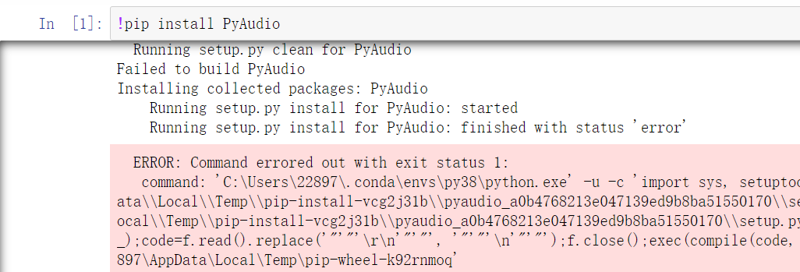
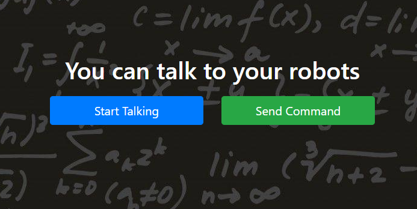
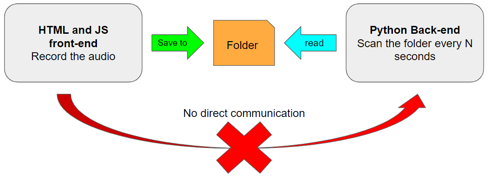

We are finalizing each component in this project at this point. During the past 2 weeks, we encountered several issues regarding integration and engineering.
Both the Robotics and NLP modules use Python as the programming language. However, some Python libraries are not compatible with the Python version (3.8) we are using. For example, we want to use a Python library called "PyAudio" to access the microphone, but the library only works with Python 3.6 and before. For Python 3.8, there are not libraries that can directly connect to the microphone. Automatic Speech Recognition (ASR) is an important function and the beginning point in our whole pipeline. We had to come up with other solutions to record the user's voice input.
 Screenshot: Trying to install PyAudioAs there are many other languages supporting microphone access, we also need to consider the compatibility issues for different operating system. Roman is using Linux and I (Yifei) am using Windows 10. Things that work on my computer may not work on Linux. The solution we come up with is using Web as the front-end to record user's voice input. Therefore, we created a very simple recorder using HTML and Javascript. Both Windows and Linux can use Chrome browser to run this Web application.
 Screenshot: The Web front-endAnother challenge we had was the communication between Javascript and Python. We can record audio from the Javascript front-end, but how should we pass the audio file to our Python back-end? There are some solutions (like Flask) which require us to set up a web server and host the Python scripts. None of us are familiar with Flask and we don't have much time to experiment on new frameworks. Giving the time limit, we finally decided to save the audio file in a certain folder and let the Python script to scan the files in the folder every N seconds. If there's a new audio file in the foler, the new file will be passed to the pipeline and finally trigger some actions. The solution is not very elegant, but we are proud of ourselves for finding a feasible shortcut.
 Screenshot: communication between Python and JavascriptRoman is still working on migrating the code in simulator to read drones. He had 3 drones ready for this project. We will have a meeting in the lab during the weekend to put everything together. During our testing with the NLP modules, we realized the pre-trained language models were not perfect for this use case. We do not have data to fine-tune the model, but we are looking forward to keeping optimizing it in the future.